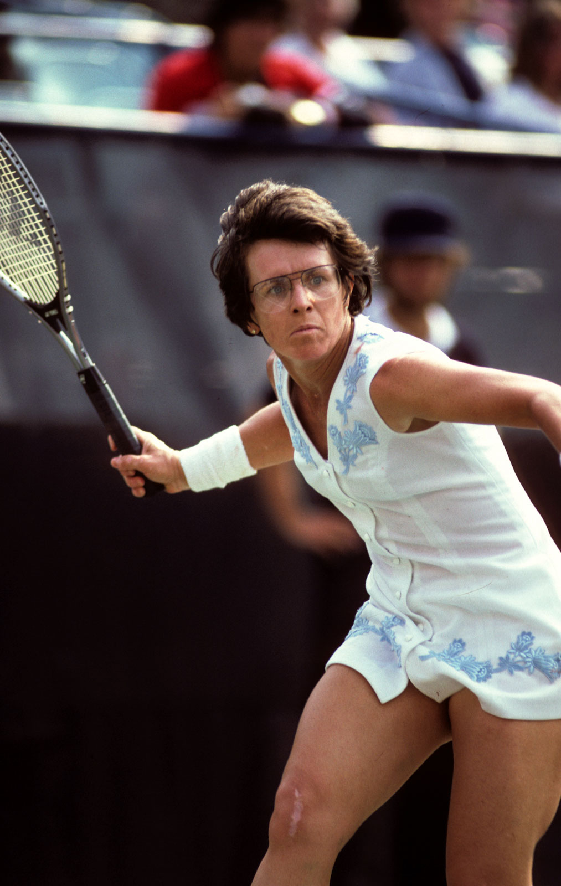

Es una exjugadora de tenis de Estados Unidos. Se la considera una de las mejores jugadoras de tenis y una de las mejores deportistas de toda la historia. Es ganadora de 39 títulos de Grand Slam: 12 en individuales, 16 en dobles femenino y 11 en dobles mixto.
Tenista estadounidense. Sin duda una de las jugadoras más sobresalientes de todos los tiempos, destacó sobre todo en las pistas de Wimbledon.
